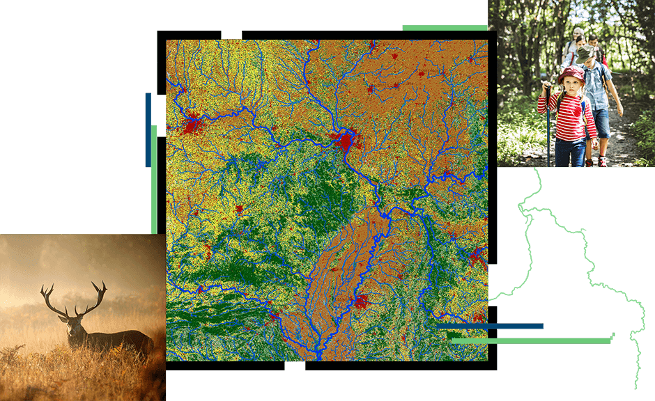

D
o
m
a
i
n
O
f
G
E
O
I
N
T
*ENVIORNMENT* :

GIS is a considered as a mighty element in order to analyze and put together the environmental data . GIS supplies spatial data (information) in a computerized planning climate; A computerized basemap can be covered with information or different layers of data onto a guide to see spatial data and connections. GIS permits and also help with a greater perspective and understanding of the physical attributes and connections that can impact the environmental status. GIS can allow us to make a fast and comparative sight of hazards (dangerous areas) and menaces(areas with higher threats that can appear in the future). GIS helps with providing a better understanding of the environmental data analysts by presenting an easier view of landscapes and associated data. GIS can be helpful with monitoring the environmental issues and planning ahead how to deal with such problems . GIS applicable Areas :
- Wild Land Analysis
- Emergency Services like Fire Prevention\n
- Hazard Mitigation and Future planning
- Air pollution and control
- Forest Fires Management
- Waste Water Management,etc...